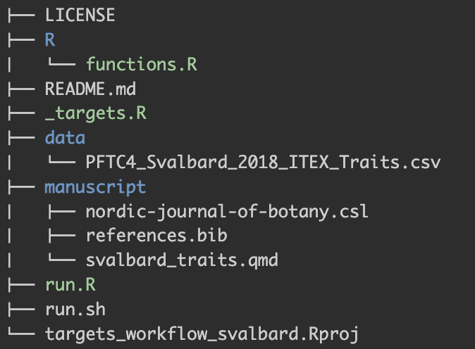
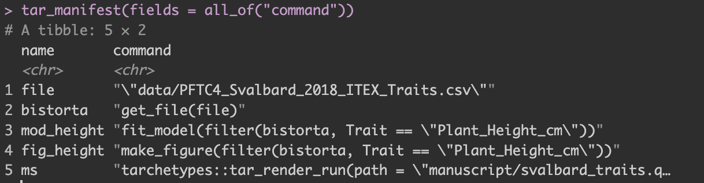
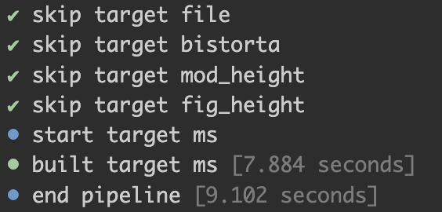

#install.packages("usethis") # if you don't have it already.
usethis::use_course("biostats-r/svalbardQuartoDemo")2 Getting started with targets
In this chapter, you will
- learn the basic targets workflow
- build your own targets pipeline
In this chapter we will go through the basic workflow of a targets pipeline. We will use plant trait data from Svalbard from the reproducible documents exercise (REF to Quarto book). Even if you have done the exercise already, download a clean repo to start from scratch to keep the workflow simple.
Exercise
To download the R project containing the data, the code and the qmd file, run:
Then follow the instructions. This will open the svalbardQuartoDemo Rstudio project.
Open the svalbard_traits_targets.qmd file and render it. Check the htlm output and try to understand what is going on.
In the next steps, we will set up a basic targets pipeline for the Svalbard trait R project and go through the main elements of a target plan, and how to run it.
2.1 The targets pipeline
A target workflow has a specific file structure including R code, functions, qmd files, data and a _targets.R file (Figure 2.1). The _targets.R file is mandatory and the most important file defining the targets pipeline. This file lives at the root of the R project folder.
An R project has many other files and it is recommended to keep code and data files in separate folders to keep the repository tidy. It is common to have one or several scripts that contain custom user-defined functions (R/functions.R). Targets pipelines are based on functions, which is good practice coding (e.g. avoid repetition), and also keeps the pipeline tidy.

To set up this file structure use the use_targets() function, which creates an initial _targets.R script with comments to help you populate the script.
Note that it also creates a couple of other files, one of which is called run.R. This is a helper script to run the pipeline and will be explained later.
Exercise
Go to the Svalbard trait project and start to set up a targets pipeline by using the use_targets() function.
2.1.1 _target.R script file
The _targets.R file configures and defines the pipeline. This file is mandatory and without it the targets pipeline will not work. When using the use_targets() function, it sets up the basic structure and comments to help fill out the rest (see below).
The _targets.R file contains the following components:
Set options such as load necessary packages or defining the output format using
tar_option_set().Run R scripts containing custom functions using the
tar_source()function.Make a list of targets, which define the pipeline and is created with
tar_target(). Each target is a step in the workflow, for example importing data, analysis or figure and looks like a normal R object (e.g. tibble, vector, figure). The targets are stored in_targets/objects/and can be used downstream in the pipeline. One advantage of the targets pipeline is that once the pipeline has run, all targets can be reproduced usingtar_load()and the pipeline does not need rerunning each time before accessing the targets. To access all the targets at once. usetar_load_everything(). Intar_load()you can also use tidy select commands to load specific targets, e.g.tar_load(starts_with("y"))
Note that the file also contains other options which are optional.
# Created by use_targets().
# Follow the comments below to fill in this target script.
# Then follow the manual to check and run the pipeline:
# https://books.ropensci.org/targets/walkthrough.html#inspect-the-pipeline # nolint
# Load packages required to define the pipeline:
library(targets)
# library(tarchetypes) # Load other packages as needed. # nolint
# Set target options:
tar_option_set(
packages = c("tibble"), # packages that your targets need to run
format = "rds" # default storage format
# Set other options as needed.
)
# tar_make_clustermq() configuration (okay to leave alone):
options(clustermq.scheduler = "multicore")
# tar_make_future() configuration (okay to leave alone):
# Install packages {{future}}, {{future.callr}}, and {{future.batchtools}} to allow use_targets() to configure tar_make_future() options.
# Run the R scripts in the R/ folder with your custom functions:
tar_source()
# source("other_functions.R") # Source other scripts as needed. # nolint
# Replace the target list below with your own:
list(
tar_target(
name = data,
command = tibble(x = rnorm(100), y = rnorm(100))
# format = "feather" # efficient storage of large data frames # nolint
),
tar_target(
name = model,
command = coefficients(lm(y ~ x, data = data))
)
)Now it is your turn to populate the targets pipeline.
2.1.2 Make custom functions
Targets workflows are based on functions. Functions are very useful if a task has to be done multiple times.
Functions are made with the keyword function(), can have one or more arguments separated by commas, and need assigning to a name (e.g. my_function). Let us make an example we multiply two numbers, but the numbers are not always the same. This is a case for a function.
my_function <- function(arg1, arg2){
arg1 * arg2
}
my_function(arg1 = 3, arg2 = 4)Functions in the targets workflow need to be saved in a script in the folder R/. The _target.R script will look for all R files in this folder and run them.
Here is a working example for a function that runs a linear regression:
fit_model <- function(data){
mod <- lm(Value ~ Treatment, data = data)
mod
}
fit_model(data = my_data)
Exercise
Go to the Svalbard trait project create a file called functions.R and save it in the R/ folder. Then add three functions that do the fallowing:
import the data and filter the species Bistorta vivipara and the trait plant height
fit a linear regression to test how the warming treatment affects plant height
and make a boxplot showing plant height in control and warming treatments.
The code you need for this exercise is already in the svalbard_trait.qmd file. You need to copy it and turn it into functions.
When you are finished, test if the functions are doing what you think they do, i.e. test them with a small dataset.
The next step is to configure and define the targets pipeline.
2.1.3 Populate the _targets.R file
The _targets.R file has 3 main components that need to be populated.
- Use
tar_option_set()and the argumentpackageto load all the required packages that are needed to run the pipeline. Note thattargetsandtarchetypesneed to be loaded first and outside this function, otherwise the pipeline will not work. Functions that are only used in a quarto file can be loaded directly in there and do not need to be loaded here. The argumentformatlet’s you define default storage format.
# Load packages required to define the pipeline:
library(targets)
library(tarchetypes) # Load other packages as needed.
# Set target options:
tar_option_set(
packages = c("tibble"), # packages that your targets need to run
format = "rds" # default storage format
# Set other options as needed.
)The function
tar_source()will source all the R scripts in theR/folder. You do not need to do anything else here. If there are scripts that you do not want to run at the moment, move them to another place.The pipeline is a list of target objects, separated by commas. Each target is declared by the
tar_target()function. This function needs the argumentnameandcommandthat defines the code to produce the target. Here is an example of a target that uses the function to run a regression from above.
# fit model for plant height
list(
tar_target(name = mod_height,
command = fit_model(data))
)Target names should be unique (no duplicates), should not start with a dot and the name should be meaningful (do not use my_variable).
Data files are special, because they also need the argument format to decalre that this is a file. Targets will check if the file has been changed and automatically import the data again the next time the pipeline is run.
list(
tar_target(name = file,
command = "data/PFTC4_Svalbard_2018_ITEX_Traits.csv",
format = "file")
)A target usually creates a dataset, analyse data using a model or summarise or vizualise a dataset. A target should do one thing only and if a functions gets too long, it can be split into nested sub-functions to make the code readable and easier to maintain. You also want to keep the number of targets manageble. Do not put too much in one target, and also try not to procude too many.
Exercise
Populate the _targets.R file:
add all packages to the
tar_option_set()function in the_targets.Rfile that are needed to run the pipeline.check that your
_targets.Rfile sources the custom functionstar_source()and that all your functions are in the right place.and set up the pipeline with three targets that imports the data, runs the model and makes a figure.
2.1.4 Output files
The results and figures of an analysis are usually presented in a document or presentation. An output files, such as a reproducible quarto document can be added to a targets pipeline. The targets that have been produced in the pipeline can be used in the quarto file, for example a figure can be plotted.
The targets that are used in the quarto document need to be loaded into the current environment. For this we can use tar_load() or tar_read(). The first function is used when a target is used several times. tar_read() is useful if a target is only needed once, e.g. to show a figure. Once the target is loaded, it can be printed.
# print model output
tar_read(mod_height)
tidy(mod_height)To add the quarto document to the pipeline, the manuscript has to be rendered. This is done in _targets.R file in the list of targets using tar_quarto().
# render ms
tar_quarto(name = manuscript, path = "svalbard_traits.qmd")Note that all packages that are needed to run the quarto file need to be loaded in the .qmd file. If you are using a function exclusively in the quarto script, the package can be loaded only in the quarto file, but not in the _target.R file. targets and tarchetypes always need to be loaded in both files.
Exercise
Prepare your svalbard_traits.qmd script and add it to the pipeline.
Load all the necessary R packages in the quarto file.
Load all the necessary targets that you want to use in the quarto file.
And add the quarto file to the pipeline using
tar_quarto().Clean the quarto file and remove the unnecessary code, which has been moved to the custom functions.
2.1.5 Inspect and run the pipeline
We are now ready to inspect the pipeline, check for errors and run it. Use tar_manifest() to check for errors. This function lists useful information about each target, let you know if you are missing a R package and check for missing or duplicate targets (Figure 2.2).

Exercise
Run the tar_manifest() function to check if the pipeline is properly set up.
Now we are ready to run the pipeline. For this open the run.R script and run the tar_make() function. This function looks for the _targets.R in the working directory and runs the pipeline.
When running the pipeline for the first time you will see a list of all the targets and each of them is built. Once you have run the pipeline, it will always skip the targets that have not changed and are up to date and only run the once that need updating (Figure 2.3). In the long run this will save a lot of computational time and is one of the big advantages of using targets pipelines.

Exercise
Open the run.R script and run the pipeline. Hopefully, everything will run smoothly 🤞! If not check out the Trouble shooting section below.
Run the pipeline again and check if the targets that are already built are skipped.
Change something in your pipeline and run it again and see what happens. You can for example add a sentence in the quarto file, or change the colour in the figure.
Do it step by step
Target plans can be huge and complex. Start small, create a few targets and functions and make the plan running. Then add new code in small steps and check regularly if the plan is still working This will help to understand and solve errors (see next section).

2.2 Trouble shooting
2.2.1 Vizualise the pipeline
If something goes wrong, a good place to start is to vizualise your pipeline. The tar_visnetwork() function shows the dependency graph of the pipeline. Circles are targets, triangles functions, and the colour indicates if the targets are up to date or not.

2.2.2 Object not found
A common error is to call a target that does not exist. When running the pipeline this error will appear (Figure 2.6). This is usually if the name is spelled wrong or when using an old name.

2.2.3 Duplicate target
Another common mistake is to use the same name for two different targets (Figure 2.7). This is common when copy pasting code. Rename one of the objects and the problem is solved.

Exercise
If you have problems getting the target pipeline running, here is a working example that you can download or check online. Note that you need to have all the packages that are required for the targets pipeline to run installed.
#install.packages("usethis") # if you don't have it already.
usethis::use_course("biostats-r/targets_workflow_svalbard")2.3 Resources
- The target manual contains everything you need to know
- Here is a large and working target plan
- Here is a short introduction video